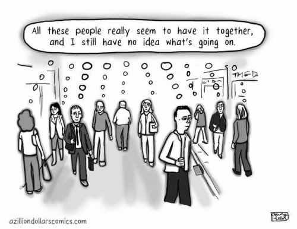

--Ancient Sumerian text, approx. 3000 BC
“There are no new thoughts.”
–Byron Katie
You think it’s just you.
Or perhaps you have it worse than others, and your situation is especially bad.
Or maybe you grant that others do also suffer the same unfortunate afflictions in life, so you bond with them in solidarity against those normal different others who don’t suffer this way.
That's when you join the autism group, the anxiety group, the positive-thinking mailing list. That’s when you try the dating sites, sign up for podcasts about getting motivated, log in every night to the, “I’m enlightened and you’re not” groups.
You may think your issues are particular to you. But sit in my chair for a day or two and you start to notice that everyone says the same things. About the same kinds of troubles.
In fact, it's always the same handful of topics people end up discussing- self doubt/self improvement, success/achievement/productivity, love/relationships/others, health/death, addictions/cravings, and enlightenment/how to live life best.
All the usual stuff, showing up as feelings, goals, desires, shoulds, shouldn’ts, likes and dislikes.
Turns out that when thoughts revolve around a recurrent set of limited topics, humans suffer.
All humans. Humans such as you.
Which is weird. I mean, you’re unique, right?
Well, maybe your kind of suffering is a new phenomenon. Or maybe the current mass suffering of so many folks is a product of difficult current times, personal traumatic childhoods, the barrage of media and technology.
“Life is suffering.” –Buddha, approx. 625 BC
Oh.
So apparently it’s not new. Since Buddha lived about 2700 years ago.
In fact, dig back a little and it begins to be clear that people have been struggling with the exact same problems, saying the same exact stuff you say, about the same exact challenges,
For at least 8100 years. As far back as they’ve found written words.
Thoughts identical to the ones you’re lugging around have literally been around at least 8000 years.
So at least you’re in good company. Old company, but still.
That thought about not being productive, or good enough, or lovable? The one about whether you should have another beer, or what other people think, or whether you’re ugly or healthy or safe from death? The thought about whether you meditate enough or have achieved enough enlightenment, if your parents did you wrong, or if life has been too hard or if feelings could be escaped by death?
Ancient. Thousands of years old.
Bringing that old spiritual maxim, “Thoughts aren’t personal,” to a whole new level.
Because thousands-of-years-old thoughts can not be about you.
Childhood traumas, or cravings for booze, or fear of disapproval, or anger at others’ obviously wrong behaviors, can’t be about you or your life if they were also about Gilgamesh the Sumerian’s life in 3000 BC.
Thoughts like, “I can’t bear this feeling, maybe I should die,” or, “I’m not reaching full potential, I’m failing at life, love, enlightenment,” can’t have anything to do with you, if they were Shakespeare’s lines for Hamlet in 1595, or in Aeschylus’ scripts in approx. 500 BC.
“It would be better to die once and for all than to suffer pain for all one's life.” ―Aeschylus, 500 BC
“Nobody lives the life he chooses to live.” —Menander, 4th cent. BC
Hmmmm. Seems you’re very very late to the, “It’s all me and mine,” party.
It becomes clear that suffering has a script. Being human has a script.
A script which is not particular to any one person's life situations. A script which carries on over centuries, independent of any life's particular circumstances and feelings.
With words like, “My thoughts” and “My inner voice,” you have claimed authorship to what is not yours.
Fine. Who cares? How does it matter?
Well, it doesn't. Unless you like sanity.
Unless you'd like freedom from a lifetime of hating yourself, fixing, “going inward,” striving and never attaining.
Because once it’s seen that all thought is ancient and repetitive and scripted,
there’s no way to continue thinking it’s you in particular with the problem.
There’s no way to continue thinking suffering is about your trauma or your cheating spouse or your inherent lack of value.
It starts to be clear that it’s just your turn to read the ancient lines.
Taking the you right out of it.
“Humans are born, they live, then they die, this is the order that the gods have decreed. But until the end comes, enjoy your life, spend it in happiness, not despair. Savor your food, make each of your days a delight, bathe and anoint yourself, wear bright clothes that are sparkling clean, let music and dancing fill your house, love the child who holds you by the hand, and give your wife pleasure in your embrace. That is the best way for a man to live.”
― The Epic of Gilgamesh, 3400 BC
This is good news.
Because separate self-sense hurts, unique person-ness hurts, laying claim to what isn't yours, hurts.
Because it's a lie.
When instead, you are a swept-along part of an ancient, common, universal,
so much bigger,
so much older,
than any one person’s
non-personal experience.
And that's a script that just might
stick around awhile.
Watch Judy on Buddha at the Gas Pump
"Hey, let’s put on a play in the barn!"
--Scriptwriters for Mickey Rooney and Judy Garland
